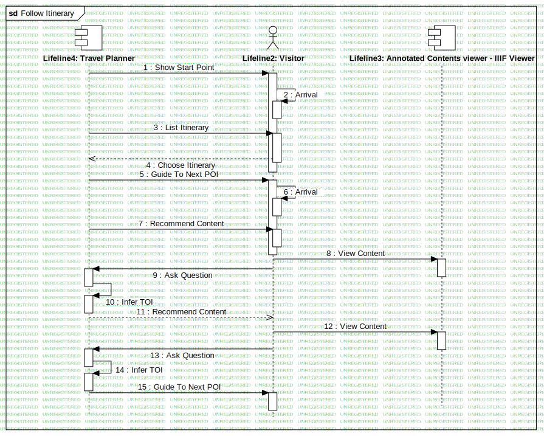

Follow Itinerary
UMLInteraction
RASTA
::
Requirement Analysis
::
OR4 - Basilica di S. Angelo in Formis / Monte Pugliano/Norba
::
Sequence - Itinerary
::
Follow Itinerary
Description
none
Diagrams

Follow Itinerary
Participants
Lifeline1
Lifeline2: Visitor
Lifeline3: Annotated Contents viewer - IIIF Viewer
Lifeline4: Travel Planner
Messages
Show Start Point (Lifeline4→Lifeline2)
Arrival (Lifeline2→Lifeline2)
List Itinerary (Lifeline4→Lifeline2)
Choose Itinerary (Lifeline2→Lifeline4)
Guide To Next POI (Lifeline4→Lifeline2)
Arrival (Lifeline2→Lifeline2)
Recommend Content (Lifeline4→Lifeline2)
View Content (Lifeline2→Lifeline3)
Ask Question (Lifeline2→Lifeline4)
Infer TOI (Lifeline4→Lifeline4)
Recommend Content (Lifeline4→Lifeline2)
View Content (Lifeline2→Lifeline3)
Ask Question (Lifeline2→Lifeline4)
Infer TOI (Lifeline4→Lifeline4)
Guide To Next POI (Lifeline4→Lifeline2)
Show Start Point (Lifeline1→Lifeline2)
List Itinerary (Lifeline1→Lifeline2)
Choose Itinerary (Lifeline2→Lifeline1)
Guide to next PoI (Lifeline1→Lifeline2)
Recommend Content (Lifeline1→Lifeline2)
Ask Question (Lifeline2→Lifeline1)
Infer ToI (Lifeline1→Lifeline1)
Recommend Content (Lifeline1→Lifeline2)
Ask Question (Lifeline2→Lifeline1)
Infer ToI (Lifeline1→Lifeline1)
Guide to next PoI (Lifeline1→Lifeline2)
Properties
Name
Value
name
Follow Itinerary
stereotype
null
visibility
public
isReentrant
true
Owned Elements
Follow Itinerary